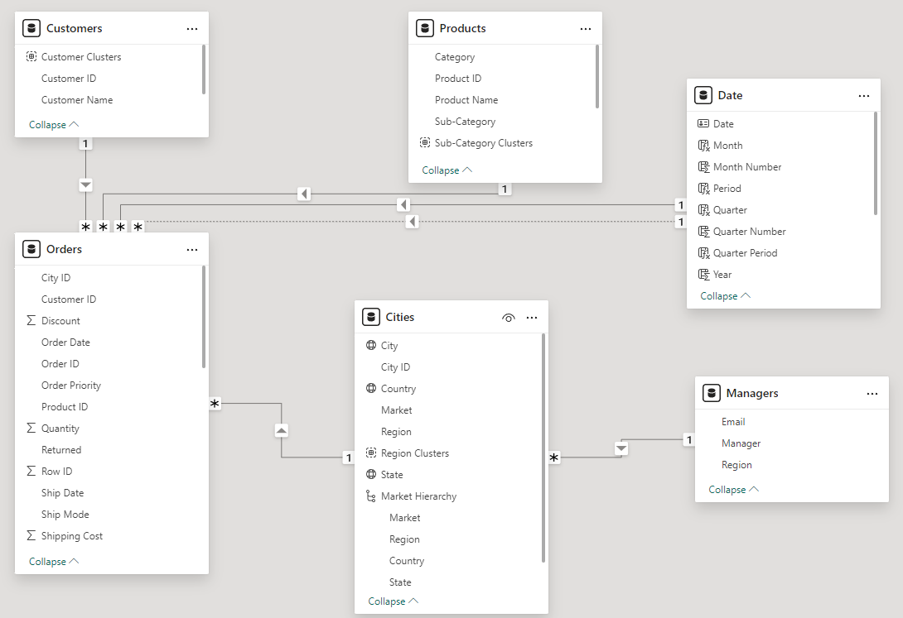
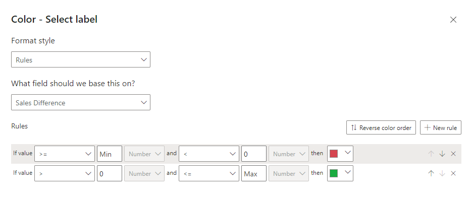
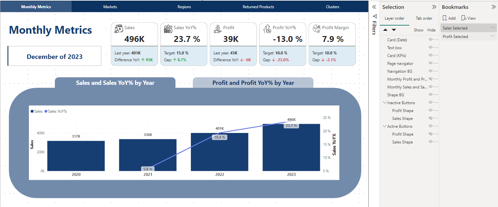
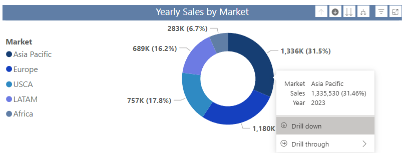
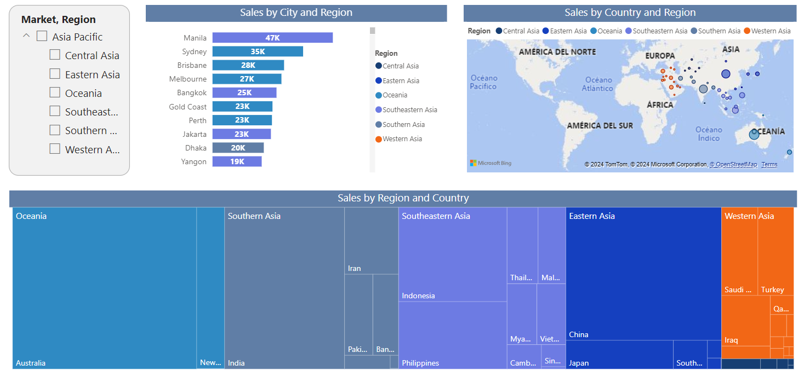

Global Retail Sales Analytics
Analysis of the global sales of a retail chain using a Power BI report and SQL queries to answer specific questions
Overview
In order to analyze the global sales of a retail chain of office and stationery items, an interactive report was created in Power BI. SQL queries were performed to answer specific questions about the last semester. In addition to the creation of the tables, Claude AI was used to support the discovery of insights and analysis of the queries.
Technologies Used
- SQL
- Power BI
- Power Query
- DAX
- Claude AI
Interactive Report (Power BI)
First, the Power BI report is shown to review different aspects of interest and interact with it. Subsequently, the process of how it was done is shown, as well as the queries elaborated to analyze the information.
Click here to view the report in full screen mode
Process
Data Preparation
- First, the base had to be normalized to go from a single Excel sheet to 4 tables:
- Orders
- Customers
- Products
- Cities
For this purpose, Excel functions such as CONCATENATE, LEFT, IFERROR, VLOOKUP, etc. were used to clean the data, in addition to eliminating duplicates and other arithmetic operations.
Once the table was normalized, a review of the data was performed in Power Query to make sure that the data would be useful for DAX calculations and visualizations. For example, I replaced the null values in the Discount column in the Orders table to be able to make some sales and profit calculations, or in the tables where the headers were not identified, I used the first row as headers and change the column data types to the appropriate data type.
In order to improve the presentation of the visualizations, a common date table was created with the following DAX formulas:
Year = YEAR('Date'[Date])
Quarter Number = QUARTER('Date'[Date])
Quarter = CONCATENATE("Q",'Date'[Quarter Number])
Month Number = MONTH('Date'[Date])
Month = FORMAT('Date'[Date], "mmm")
Period = FORMAT('Date'[Date], "MMMM of YYYY")
Quarter Period = 'Date'[Year] & " " & 'Date'[Quarter]
To better understand the relationships of the database and its contents, the model and its relationships are shown below:
DAX Measures
For the creation of measures such as sales, rate of returned products, profit margin, etc., as well as those necessary for the creation of KPIs, different DAX measures were used.
Measures of Sales, Profit, Margins and YoY%
To estimate total sales the discount and order quantity had to be taken into account, while for profit, profit margin and YoY variations the following measures were created with DAX:
Sales = SUMX(Orders, Orders[Unit Price] * (1 - Orders[Discount]) * Orders[Quantity])
Profit = SUMX(Orders, [Sales] - (Orders[Unit Cost] * Orders[Quantity]))
Profit Margin = [Profit]/[Sales]
Sales YoY% =
VAR LastYearSales =
CALCULATE(
[Sales],
SAMEPERIODLASTYEAR('Date'[Date])
)
RETURN
DIVIDE(
[Sales] - LastYearSales,
LastYearSales
)
Profit YoY% =
VAR LastYearProfit =
CALCULATE(
[Profit],
SAMEPERIODLASTYEAR('Date'[Date])
)
RETURN
DIVIDE(
[Profit] - LastYearProfit,
LastYearProfit
)
Returned Product Measures
In order to analyze the rate of returned products and to better monitor this problem, the following measures were taken:
Returned % = DIVIDE([Returned Count], COUNT(Orders[Row ID]))
Returned % Last Q =
CALCULATE(
DIVIDE([Returned Count], COUNT(Orders[Row ID])),
DATESQTD(ENDOFQUARTER('Date'[Date]))
)
Returned Count = COUNTX(FILTER(Orders, Orders[Returned] = "Yes"), Orders[Row ID])
KPI Measures
In order to elaborate the KPIs, the following measures were taken to make the visualizations more attractive and to allow a quick identification of the situation of the variables and their trend:
Last Year Sales = CALCULATE([Sales], SAMEPERIODLASTYEAR('Date'[Date]))
Sales Diff with Arrow =
VAR Up = UNICHAR(129129)
VAR Down = UNICHAR(129131)
VAR SalesDiff = [Sales] - [Last Year Sales]
RETURN
IF(
SalesDiff < 0,
Down & " " & FORMAT(ROUND( SalesDiff/1000,0) , "#,###") & "K",
Up & " " & FORMAT(ROUND( SalesDiff/1000,0) , "#,###") & "K"
)
Sales YoY Target Difference = [Sales YoY%] - [Sales YoY Target]
Sales YoY Target Diff with Arrow =
VAR Up = UNICHAR(129129)
VAR Down = UNICHAR(129131)
VAR Diff = [Sales YoY Target Difference]
RETURN
IF(
Diff < 0,
Down & " " & FORMAT(Diff, "###.0%"),
Up & " " & FORMAT(Diff, "###.0%")
)
Last Year Profit = CALCULATE([Profit], SAMEPERIODLASTYEAR('Date'[Date]))
Profit Diff with Arrow =
VAR Up = UNICHAR(129129)
VAR Down = UNICHAR(129131)
VAR ProfitDiff = [Profit] - [Last Year Profit]
RETURN
IF(
ProfitDiff < 0,
Down & " " & FORMAT(ROUND( ProfitDiff/1000,0) , "#,###") & "K",
Up & " " & FORMAT(ROUND( ProfitDiff/1000,0) , "#,###") & "K"
)
Profit YoY Target Difference = [Profit YoY%] - [Profit YoY Target]
Profit YoY Target Diff with Arrow =
VAR Up = UNICHAR(129129)
VAR Down = UNICHAR(129131)
VAR Diff = [Profit YoY Target Difference]
RETURN
IF(
Diff < 0,
Down & " " & FORMAT(Diff, "###.0%"),
Up & " " & FORMAT(Diff, "###.0%")
)
Profit Margin Target Difference = [Profit Margin] - [Profit Margin Target]
Profit Margin Target Gap with Arrow =
VAR Up = UNICHAR(129129)
VAR Down = UNICHAR(129131)
VAR Diff = [Profit Margin Target Difference]
RETURN
IF(
Diff < 0,
Down & " " & FORMAT(Diff, "###.0%"),
Up & " " & FORMAT(Diff, "###.0%")
)
Power BI Report Preparation
Since the report is available at the top, I won't go as deeply into each step to create it, but some aspects that are not so easily seen are developed below.
To make the KPIs, the DAX formulas mentioned above were used to show the arrow indicating the trend, while a conditional formatting on the value of the Reference labels was used to make it change color as shown below. I downloaded the icon cards from flaticon.com and I put a space between image and callout of 4px and a size of 30px.
To make the “Sales and Sales YoY% by Year” and “Profit and Profit YoY% by Year” graphs appear as the tab was selected, I inserted some shapes to function as buttons to which I assigned a bookmark to display the corresponding graphs and shapes. I used some shapes as “inactive buttons” so that it was better understood that this option was being selected and the other tab was inactive.
Since the Market field has a hierarchy, you can drill down for a more disaggregated analysis. The Market hierarchy is Market > Region > Country > State > City
Also, the Market field was added to the drill-through well in the Regions tab so that each region can be analyzed in more detail and more details of a market of interest can be obtained from the visualizations containing this field.
SQL Queries
- Specific SQL queries were performed to answer the following 4 questions about the last semester:
- Which products have the best profit margin by subcategory?
- Which are the customers that spends the most for each business segment?
- Are the top products by sales the same as the top products by profit?
- Are the top cities by sales the same as the top cities by profit?
Below are the queries that were made to obtain the tables necessary to perform the analysis, which is found in a later section.
First, I made View with the sales and earnings figures for the last six months ended to be used in the following queries.
-- Sales & Profit Figures for 2023 S2 View
CREATE OR REPLACE VIEW v_figures AS
SELECT
id_row,
order_date,
id_customer,
id_city,
id_product,
unit_price * (1 - COALESCE(discount,0)) * quantity AS sales,
unit_price * (1 - COALESCE(discount,0)) * quantity - unit_cost * quantity AS profit
FROM orders
WHERE order_date BETWEEN '2023-07-01' AND '2023-12-31';
Which products have the best profit margin by subcategory?
I made the following query to identify which were the products with the best profit margins by sub-category:
-- Profit Margin by Category View
CREATE OR REPLACE VIEW v_product_profit_margin AS
SELECT
f.id_product,
product_name AS product,
subcategory,
category,
SUM(sales) AS sales,
SUM(profit) AS profit,
SUM(profit)/SUM(sales) AS profit_margin
FROM v_figures f
LEFT JOIN products p
ON f.id_product = p.id_product
GROUP BY 1,2,3,4;
-- Export Top Products by Profit Margin by Sub-Category
COPY(
WITH max_profit_margin_products AS(
SELECT
*,
MAX(profit_margin) OVER(PARTITION BY subcategory) AS max_pm
FROM v_product_profit_margin
ORDER BY max_pm
)
SELECT
category,
subcategory,
id_product,
product,
ROUND(profit_margin*100,2) AS profit_margin
FROM max_profit_margin_products
WHERE profit_margin = max_pm
ORDER BY 1,2
)
TO 'C:\temp\global_store\queries\top_products_by_margin.csv'
WITH(
FORMAT CSV,
HEADER TRUE,
ENCODING 'WIN1252'
);
Which are the customers that spends the most for each business segment?
Then I made another query to identify which were the customers that spent the most for each business segment:
-- Customer Rankings View
CREATE OR REPLACE VIEW v_customer_ranking AS
WITH
customer_sales AS (
SELECT
f.id_customer,
customer_name AS customer,
segment,
country,
SUM(sales) AS sales
FROM v_figures f
LEFT JOIN customers c
ON f.id_customer = c.id_customer
LEFT JOIN cities ci
ON f.id_city = ci.id_city
GROUP BY 1,2,3,4
)
SELECT
*,
DENSE_RANK() OVER(PARTITION BY segment ORDER BY sales DESC) AS sales_rank
FROM customer_sales
-- Export Top 5 Customers by Sales by Segment
COPY (
SELECT
segment,
sales_rank,
id_customer,
customer,
country,
ROUND(sales,0) AS sales
FROM v_customer_ranking
WHERE sales_rank <= 5
ORDER BY 1, 2 ASC
)
TO 'C:\temp\global_store\queries\top_customers_by_sales.csv'
WITH (
FORMAT CSV,
HEADER TRUE,
ENCODING 'WIN1252'
);
Are the top products by sales the same as the top products by profit?
To answer the question of whether the best-selling products were the ones that generated the most profits according to each category, I made two queries, one for the sales and another for the profits, then I made the analysis (which is avialable in a later section). Below, for illustrative purposes only the queries are shown to see how they were made.
-- Product Rankings View
CREATE OR REPLACE VIEW v_product_rankings AS
WITH
product_figures AS(
SELECT
product_name AS product,
category,
ROUND(SUM(sales),0) AS sales,
ROUND(SUM(profit),0) AS profit
FROM v_figures f
LEFT JOIN products p
ON f.id_product = p.id_product
GROUP BY 1,2
)
SELECT
*,
RANK() OVER(PARTITION BY category ORDER BY sales DESC) AS sales_rank,
RANK() OVER(PARTITION BY category ORDER BY profit DESC) AS profit_rank
FROM product_figures;
-- Export Top 3 Products by Sales by Category
COPY (
SELECT
category,
sales_rank,
product,
sales
FROM v_product_rankings
WHERE sales_rank <= 3
ORDER BY 1, 2 ASC
)
TO 'C:\temp\global_store\queries\top_products_by_sales.csv'
WITH (
FORMAT CSV,
HEADER TRUE,
ENCODING 'WIN1252'
);
-- Export Top 3 Products by Profit by Category
COPY (
SELECT
category,
profit_rank,
product,
profit
FROM v_product_rankings
WHERE profit_rank <= 3
ORDER BY 1, 2 ASC
)
TO 'C:\temp\global_store\queries\top_products_by_profit.csv'
WITH (
FORMAT CSV,
HEADER TRUE,
ENCODING 'WIN1252'
);
Are the top cities by sales the same as the top cities by profit?
To answer the question of whether the top cities by sales were the same as the top cities by profit I also made two queries for sales and profits. The analysis of this information can also be found in a later section. Only the queries are shown below.
-- City Rankings View
CREATE OR REPLACE VIEW v_city_rankings AS
WITH
city_figures AS(
SELECT
city,
country,
market,
ROUND(SUM(sales),0) AS sales,
ROUND(SUM(profit),0) AS profit
FROM v_figures f
LEFT JOIN cities c
ON f.id_city = c.id_city
GROUP BY 1,2,3
)
SELECT
*,
RANK() OVER(PARTITION BY market ORDER BY sales DESC) AS sales_rank,
RANK() OVER(PARTITION BY market ORDER BY profit DESC) AS profit_rank
FROM city_figures;
-- Export Top 3 Cities by Sales by Market
COPY (
SELECT
market,
sales_rank,
city,
country,
sales
FROM v_city_rankings
WHERE sales_rank <= 3
ORDER BY 1, 2 ASC
)
TO 'C:\temp\global_store\queries\top_cities_by_sales.csv'
WITH (
FORMAT CSV,
HEADER TRUE,
ENCODING 'WIN1252'
);
-- Export Top 3 Cities by Profit by Market
COPY (
SELECT
market,
profit_rank,
city,
country,
profit
FROM v_city_rankings
WHERE profit_rank <= 3
ORDER BY 1, 2 ASC
)
TO 'C:\temp\global_store\queries\top_cities_by_profit.csv'
WITH (
FORMAT CSV,
HEADER TRUE,
ENCODING 'WIN1252'
);
Analysis
In addition to the creation of the tables, Claude AI was used to support the discovery of insights and analysis of the queries.
Which products have the best profit margin by subcategory?
The following table shows the products with the best profit margins by subcategory
| category | subcategory | id_product | product | profit_margin |
|---|---|---|---|---|
| Furniture | Bookcases | FUR-BO-5780 | Safco Floating Shelf Set, Traditional | 41.21 |
| Furniture | Chairs | FUR-CH-5803 | SAFCO Steel Folding Chair, Set of Two | 41.94 |
| Furniture | Furnishings | FUR-FU-3953 | Deflect-O Photo Frame, Erganomic | 48.99 |
| Furniture | Tables | FUR-TA-3421 | Bevis Conference Table, Rectangular | 48.00 |
| Office Supplies | Appliances | OFF-AP-4748 | Hoover Toaster, Silver | 45.97 |
| Office Supplies | Art | OFF-AR-5633 | Prang Dustless Chalk Sticks | 50.00 |
| Office Supplies | Binders | OFF-BI-3326 | Avery Triangle Shaped Sheet Lifters, Black, 2/Pack | 50.00 |
| Office Supplies | Envelopes | OFF-EN-6359 | White Business Envelopes with Contemporary Seam, Recycled White Business Envelopes | 50.00 |
| Office Supplies | Fasteners | OFF-FA-5459 | OIC Binder Clips | 50.00 |
| Office Supplies | Labels | OFF-LA-3193 | Avery 475 | 50.00 |
| Office Supplies | Paper | OFF-PA-3012 | Adams Telephone Message Book w/Frequently-Called Numbers Space, 400 Messages per Book | 50.00 |
| Office Supplies | Paper | OFF-PA-6308 | Tops Green Bar Computer Printout Paper | 50.00 |
| Office Supplies | Paper | OFF-PA-6440 | Xerox 1890 | 50.00 |
| Office Supplies | Storage | OFF-ST-4062 | Eldon Folders, Single Width | 46.91 |
| Office Supplies | Supplies | OFF-SU-4127 | Elite Scissors, Easy Grip | 45.96 |
| Technology | Accessories | TEC-AC-3389 | Belkin Memory Card, Erganomic | 50.00 |
| Technology | Copiers | TEC-CO-4770 | HP Fax and Copier, Digital | 46.98 |
| Technology | Machines | TEC-MA-4594 | Hewlett-Packard 300S Scientific Calculator | 46.00 |
| Technology | Phones | TEC-PH-5825 | Samsung Headset, Full Size | 49.98 |
Note that in the Office Supplies category, several subcategories have products with a 50% profit margin, which is the highest in the dataset.
Which are the customers that spends the most for each business segment?
The following table shows the customers that spent the most for each business segment.
| segment | sales_rank | id_customer | customer | country | sales |
|---|---|---|---|---|---|
| Consumer | 1 | HL-150401406 | Hunter Lopez | United States | 10523 |
| Consumer | 2 | SV-203651406 | Seth Vernon | United States | 8299 |
| Consumer | 3 | DL-133158 | Delfina Latchford | Austria | 7384 |
| Consumer | 4 | HG-1484545 | Harry Greene | France | 6286 |
| Consumer | 5 | LT-7110117 | Liz Thompson | South Africa | 6098 |
| Corporate | 1 | VG-2180558 | Vivek Grady | India | 9032 |
| Corporate | 2 | GT-146351408 | Grant Thornton | United States | 8167 |
| Corporate | 3 | PJ-1883564 | Patrick Jones | Italy | 7959 |
| Corporate | 4 | TS-213701406 | Todd Sumrall | United States | 6492 |
| Corporate | 5 | CP-1234058 | Christine Phan | India | 5614 |
| Home Office | 1 | TA-213851406 | Tom Ashbrook | United States | 13716 |
| Home Office | 2 | BF-1100558 | Barry Franz | India | 9287 |
| Home Office | 3 | PO-919586 | Phillina Ober | Morocco | 7065 |
| Home Office | 4 | EH-1412545 | Eugene Hildebrand | France | 5697 |
| Home Office | 5 | BE-1133527 | Bill Eplett | China | 4913 |
- Regarding the customers that spends the most for each business segment, the following was found:
- The United States appears most frequently (5 times), besides the fact that the US has top consumers in all three segments, indicating it's a significant market.
- India appears three times, all in different segments, suggesting strong performance across segments in this market.
- The highest overall sales come from the Home Office segment, with Tom Ashbrook (US) at $13,716. However, Home Office has the highest top sale ($13,716) and the lowest top 5 sale ($4,913).
Are the top products by sales the same as the top products by profit?
With regard to the question of whether the best-selling products are the ones that generate the most profits according to each category, the following was found:
- The Office Supplies category shows the highest similarity between top products by sales and profit, with 2 out of 3 products being identical.
- The Technology category also shows high similarity, with all three products appearing in both lists, albeit in different orders.
- The Furniture category shows no overlap between top products by sales and profit, indicating that the products with the highest sales are not necessarily the most profitable in this category.
In conclusion, the top products by sales are partially the same as the top products by profit, with the degree of similarity varying by category. The Technology and Office Supplies categories show significant overlap, while the Furniture category shows no overlap at all. This suggests that in some categories (like Technology and Office Supplies), high sales volume often correlates with high profitability, while in others (like Furniture), there might be factors such as higher margins on certain items that don't necessarily have the highest sales volumes.
Are the top cities by sales the same as the top cities by profit?
In relation to the question of whether the cities that generate the most sales are the same as those that generate the most profits according to each market, the following was found:
- The USCA market shows the highest similarity, with 2 out of 3 cities appearing in both lists.
- Africa also shows significant overlap, with 2 out of 3 cities in both lists.
- Europe and LATAM each have one city appearing in both lists.
- Asia Pacific shows no overlap between the top cities by sales and profit.
Overall, the top cities by sales are partially the same as the top cities by profit, but there are significant differences:
- Only 6 out of 15 cities (40%) appear in both lists across all markets.
- New York City is the top city for both sales and profit in the USCA market.
- Managua (Nicaragua) is the top city for both sales and profit in the LATAM market.
- The order of cities often differs between sales and profit rankings, even when they appear in both lists.
- The Asia Pacific market shows the most disparity, with completely different cities in the sales and profit lists.
These differences suggest that high sales volume doesn't always translate directly to high profits. Factors such as costs, pricing strategies, and product mix likely play significant roles in determining profitability in different cities and markets.